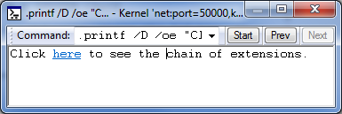
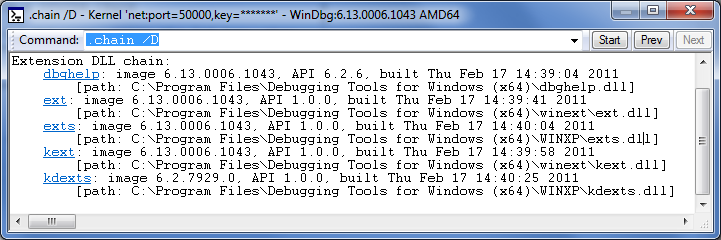

The .printf token behaves like the printf statement in C.
.printf [/D] [Option] "FormatString" [, Argument , ...]
Syntax Elements
- /D
-
Specifies that the format string contains Debugger Markup Language (DML).
- Option
-
(WinDbg only) Specifies the type of text message that WinDbg should interpret the FormatString as. WinDbg assigns each type of Debugger Command window message a background and text color; choosing one of these options causes the message to be displayed in the appropriate colors. The default is to display the text as a normal-level message. For more information on message colors and how to set them, see View | Options.
The following options are available.
Option Type of message Title of colors in Options dialog box /od
debuggee
Debuggee level command window
/oD
debuggee prompt
Debuggee prompt level command window
/oe
error
Error level command window
/on
normal
Normal level command window
/op
prompt
Prompt level command window
/oP
prompt registers
Prompt registers level command window
/os
symbols
Symbol message level command window
/ov
verbose
Verbose level command window
/ow
warning
Warning level command window
- FormatString
-
Specifies the format string, as in printf. In general, conversion characters work exactly as in C. For the floating-point conversion characters, the 64-bit argument is interpreted as a 32-bit floating-point number unless the l modifier is used.
The %p conversion character is supported, but it represents a pointer in the target's virtual address space. It must not have any modifiers and it uses the debugger's internal address formatting. The following additional conversion characters are supported.
Character Argument type Argument Text printed %p
ULONG64
A pointer in the target's virtual address space.
The value of the pointer.
%N
DWORD_PTR (32 or 64 bits, depending on the host's architecture)
A pointer in the host's virtual address space.
The value of the pointer. (This is equivalent to the standard C %p character.)
%I
ULONG64
Any 64-bit value.
The specified value. If this is greater than 0xFFFFFFFF, it is printed as a 64-bit address; otherwise it is printed as a 32-bit address.
%ma
ULONG64
The address of a NULL-terminated ASCII string in the target's virtual address space.
The specified string.
%mu
ULONG64
The address of a NULL-terminated Unicode string in the target's virtual address space.
The specified string.
%msa
ULONG64
The address of an ANSI_STRING structure in the target's virtual address space.
The specified string.
%msu
ULONG64
The address of a UNICODE_STRING structure in the target's virtual address space.
The specified string.
%y
ULONG64
The address of a debugger symbol in the target's virtual address space.
A string containing the name of the specified symbol (and displacement, if any).
%ly
ULONG64
The address of a debugger symbol in the target's virtual address space.
A string containing the name of the specified symbol (and displacement, if any), as well as any available source line information.
- Arguments
-
Specifies arguments for the format string, as in printf. The number of arguments that are specified should match the number of conversion characters in FormatString. Each argument is an expression that will be evaluated by the default expression evaluator (MASM or C++). For details, see Numerical Expression Syntax.
Additional Information
For information about other control flow tokens and their use in debugger command programs, see Using Debugger Command Programs.
Remarks
The color settings that you can choose by using the Options parameter are by default all set to black text on a white background. To make best use of these options, you must first use View | Options to open the Options dialog box and change the color settings for Debugger Command window messages.
The following example shows how to include a DML tag in the format string.
| cmd |
|---|
.printf /D "Click <link cmd=\".chain /D\">here</link> to see extensions DLLs." |

The output shown in the preceding image has a link that you can click to execute the command specified in the <link> tag. The following image shows the result of clicking the link.

For information about DML tags, see dml.doc in the installation folder for Debugging Tools for Windows.